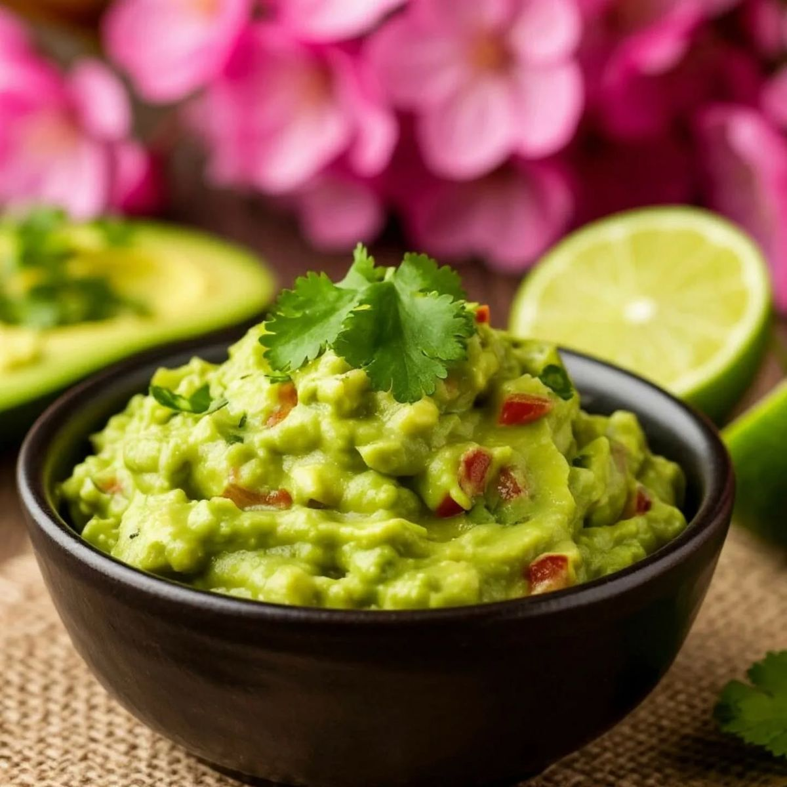

Guacamole — закуска из авокадо
Гуакамоле — традиционная мексиканская закуска из спелого авокадо. Его растирают с лаймом, луком, томатами, кинзой и перцем чили. Подают с кукурузными чипсами (начос) или как соус к тако.
Авокадо разрезать, вынуть мякоть и размять вилкой (не в блендере — так сохранится текстура). Добавить сок лайма, мелко нарезанные лук, томат, кинзу и чили. Посолить, перемешать. Подавать сразу — иначе гуакамоле потемнеет.
Назад